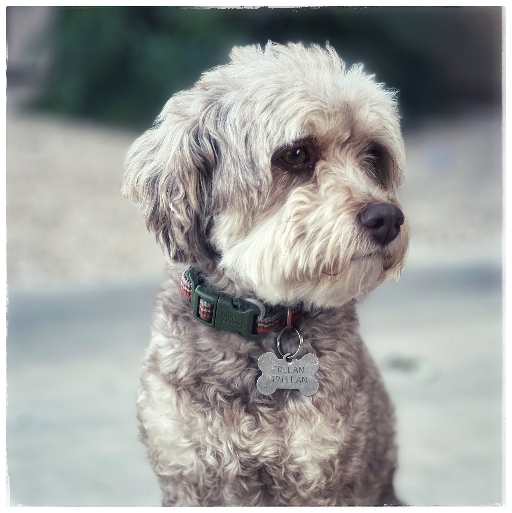

Tons of people have dogs. Growing up, my older siblings had one or two, but I don't have much recollection. Until my brother was about 23, that is. He brought home the most beautiful white husky that, to this very day, surpasses any other that I have laid eyes on. The merit of this dog beggared belief. He was loyal, smart, well-trained at his master's hand. I never claimed any ownership of him, but he was so damn obedient that he made you feel kinship immediately.
That poor animal was laid to rest prematurely, as he crossed the rainbow bridge when my brother pulled over to assist another dog owner with their own wounded animal. I don't remember all the details, suffice it to say this beautiful dog was struck by a car as my brother crossed the highway.
My eldest brother has had several dogs since that day, mainly of the German Shepherd breed. They've been loyal dogs as well, owing mainly to my brother's prowess of training dogs to their potential. But to me, they've never neared the sentimentality I've felt toward that keen animal.
I got a little ahead of myself in my recollection. Late in my Bountiful, Utah life, my mom may have felt a little bad for me, so she let me have a pretty cute Cocker Spaniel that she quite forcefully named "Crackers" (I wanted QuikSilver, so who knows). I only had that pup a few months before he got ran over by a car in my front yard. After nursing him back to health, my parents decided it was best if I gave him up.
And then the long dark winter set in, wherein no dogs came into my life.
There were moments during my first marriage where I felt we were ready, but the kids were so young that we just didn't ever pull the trigger. In hindsight, maybe the best time ever to have a dog is when the kids are young. But I digress. Everything changed when, in 2017, we adopted a fabulous Goldendoodle. His codename from the breeders was "Rocket" (all of the litter had Guardians of the Galaxy names), but we loved the name and kept it.
Then the walls of life came crashing down; my marriage dissolved, and Rocket stayed with his mom. I lived out of apartments and rentals and never had him around. That sure made my 3 kiddos sad, but they were able to see Rocket weekly when they went back to stay with their mom.
Then, in 2019, I bought my own house. Within weeks, I was hunting. And I mean, feverishly searching. I couldn't see myself with a large dog, and I knew I wanted a girl. My niece had a really fetchingly smart Aussie, so I started playing around with the idea of a mixed Aussie. Within a few weeks of closing on my house, I found someone in Gilbert who was selling the last of their litter...a 21 week Aussie-poo that was simply not wanted by anyone.
I met her and that's all it took. She rolled over on her back and I patted her belly and didn't even question whether I should or not. I took the rest of my savings (there wasn't much) and bought her. Within another day or so, the kids and I decided to call her Trillian.
My logic at the time, being a single dad, was to have something to keep me grounded. Something to pull me back home when my kids weren't around. Another living, breathing soul to fill the empty halls of my house with a fraction of the energy provided by my children.
You must understand that if my kids weren't home, I would wander aimlessly after work. Some of those nights were filled by meaningless dates with people I had met via online dating apps, spending way too much money for a dinner conversation that invariably went nowhere. But most of the time, I would simply wander...driving aimlessly through the streets of the East Valley until I was hungry enough to eat alone at some restaurant and call it a night.
It has been nearly four years now since Trillian entered my life, and while there have been plenty of frustrating moments, vet bills, messes, and early destruction, I am immensely grateful for her spirit. The qualities of a dog are near endless, but her special ability to entangle herself in my emotions and help me sort them out is priceless.
So, this is a small tribute to my dog, and maybe to all the dogs come into my life. Each one of them laid a foundation of knowledge that percolated to the top of my mind when Trillian came into my family. I hope I have trained her well. And may she have many more years of keeping me company, and out of trouble.